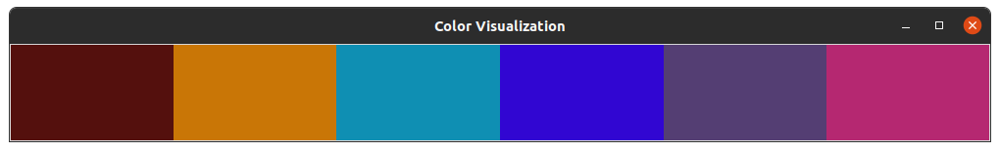
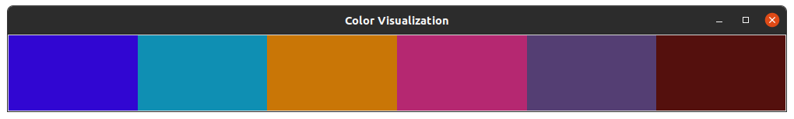

sort¶
Introduction¶
The sort command allow to sort a list of colors given a color palette file (see Color Palette File Specification)
Example¶
Given the file colors.txt with the following content (see Color Palette File Specification):
(49, 6, 210) Dark Blue
#0f8fb3 Light Blue
(201, 118, 6) Orange
(84, 62, 115) Violet
#b52871 Dark Pink
(84, 16, 13) Dark Red
Which represent the following colors:
Let’s sort it using all the default values:
$ harmony sort colors.txt
And we generate a file colors_hillbert_sorted.txt with the following content:
(84, 16, 13) Dark Red
(84, 62, 115) Violet
#b52871 Dark Pink
(201, 118, 6) Orange
#0f8fb3 Light Blue
(49, 6, 210) Dark Blue
Which represent the following colors:

Arguments¶
- colors-file¶
The Harmony color palette file with the list of colors to be sorted (see Color Palette File Specification).
Options¶
- --sorting-algorithm <algorithm>, -a <algorithm>¶
Default: herbert. Determine which algorithm should be used to sort the colors:
rgb: Sort the colors based on their RGB values;
hsv: Sort the colors based on their HSV values;
hsl: Sort the colors based on their HSL values;
luminosity: Sort the colors based on their perceived luminosity;
step: Sort the colors based on their hue, luminosity and value splitting them in 8 steps and sorting them separately;
step-alternated: Same as step, but the luminosity step is alternated forward and backward, bringing a sensation of continuity;
hillbert: Sort the colors based on their proximity in Hillbert Curves calculated on top of the RGB values;
Changed in version 0.4.2: Added short name
-a.Example¶
Given the file
colors.txtwith the following content (see Color Palette File Specification):(49, 6, 210) Dark Blue #0f8fb3 Light Blue (201, 118, 6) Orange (84, 62, 115) Violet #b52871 Dark Pink (84, 16, 13) Dark Red
Let’s sort it with the
hslalgorithm:$ harmony sort colors.txt -a hsl
Which represent the following colors:
And we generate a file
colors_hsl_sorted.txtwith the content:(84, 16, 13) Dark Red (201, 118, 6) Orange #0f8fb3 Light Blue (49, 6, 210) Dark Blue (84, 62, 115) Violet #b52871 Dark Pink
Which represent the following colors:

- --direction <direction>, -d <direction>¶
Default: forward. Determine if the colors will be sorted in its natural order or in reverse:
forward: the colors will be sorted in its natural order
backward: the colors will be sorted in reverse
New in version 0.2.0: Added
--directionoption;Changed in version 0.4.2: Added short name
-d.Example¶
Given the file
colors.txtwith the following content (see Color Palette File Specification):(49, 6, 210) Dark Blue #0f8fb3 Light Blue (201, 118, 6) Orange (84, 62, 115) Violet #b52871 Dark Pink (84, 16, 13) Dark Red
Which represent the following colors:
Let’s sort it forward:
$ harmony sort colors.txt
And we generate a file
colors_hillbert_sorted.txtwith the following content:(84, 16, 13) Dark Red (84, 62, 115) Violet #b52871 Dark Pink (201, 118, 6) Orange #0f8fb3 Light Blue (49, 6, 210) Dark Blue
Which represent the following colors:
Now, we will sort it backwards:
$ harmony sort colors.txt -d backward
And we generate a file
colors_hillbert_sorted.txtwith the following content:(49, 6, 210) Dark Blue #0f8fb3 Light Blue (201, 118, 6) Orange #b52871 Dark Pink (84, 62, 115) Violet (84, 16, 13) Dark Red
Which represent the following colors:

- --color-format <format>, -f <format>¶
Default: input. Determine the format the colors are going to be written in the output file:
input: The output format will be the same as the input format;
rgb: The output for all colors will be in RGB format;
hexcode: The output for all colors will be in Hexcode format;
Changed in version 0.4.2: Added short name
-f.Example¶
Given the file
colors.txtwith the following content (see Color Palette File Specification):(49, 6, 210) Dark Blue #0f8fb3 Light Blue (201, 118, 6) Orange (84, 62, 115) Violet #b52871 Dark Pink (84, 16, 13) Dark Red
Let’s sort with the output color format set to
input:$ harmony sort colors.txt
And we generate a file
colors_hillbert_sorted.txtwith the following content:(84, 16, 13) Dark Red (84, 62, 115) Violet #b52871 Dark Pink (201, 118, 6) Orange #0f8fb3 Light Blue (49, 6, 210) Dark Blue
Now we will sort with the output color format set to
rgb:$ harmony sort colors.txt -f rgb
And we generate a file
colors_hillbert_sorted.txtwith the following content:(84, 16, 13) Dark Red (84, 62, 115) Violet (181, 40, 113) Dark Pink (201, 118, 6) Orange (15, 143, 179) Light Blue (49, 6, 210) Dark Blue
- --suffix <suffix>, -s <suffix>¶
Default: _sorted. The suffix to be append to the file’s name.
Changed in version 0.4.2: Added short name
-s.Example¶
Given the file
colors.txtwith the following content (see Color Palette File Specification):(49, 6, 210) Dark Blue #0f8fb3 Light Blue (201, 118, 6) Orange (84, 62, 115) Violet #b52871 Dark Pink (84, 16, 13) Dark Red
Let’s sort with the suffix
_example:$ harmony sort colors.txt -s _example
And the output file will be called
colors_hillbert_example.txt.
- --help¶
Display the options and information about the command;